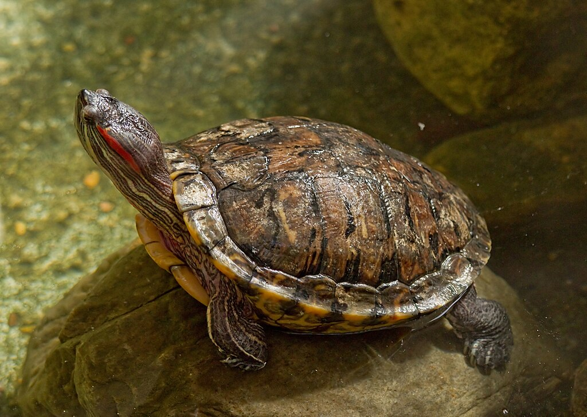

Jeden z najpopularniejszych żółwi wodnych w polskich hodowlach zwany również żółwiem ozdobnym lub żółwiem czerwonouchym. W naturze występuje w Ameryce Północnej, Środkowej i na północy Ameryki Południowej. Pojedyncze osobniki pojawiają się także w naturze w Polsce, stanowiąc konkurencję dla rodzimego żółwia błotnego. Osiąga długość 12,5 – 29 cm. Posiada pancerz oliwkowo-zielonej barwy. Po bokach zielonej głowy występują rozszerzające się do tyłu czerwone paski, a poniżej paski jasnożółte. W Polsce żółw czerwonolicy jest uznawany są za gatunek inwazyjny i jest zabroniona jego sprzedaż.

2023 | Autorka strony: Kinga Markowska nr indeksu: 164407